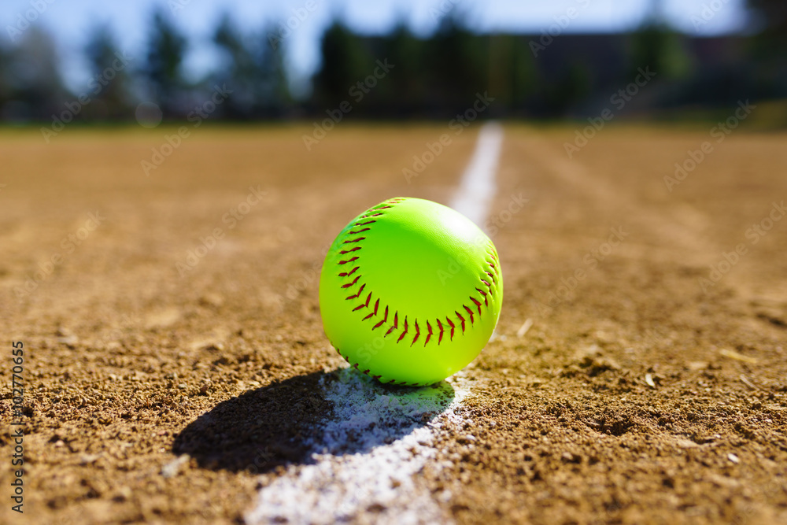

Softball
Softball is een variatie van baseball met een grotere bal en onderhandse pitching, dit wordt op een kleiner veld gespeeld.

Softball is een variatie van baseball met een grotere bal en onderhandse pitching, dit wordt op een kleiner veld gespeeld.
